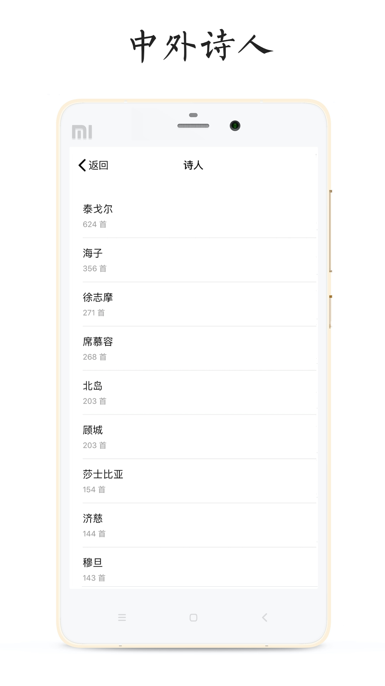

读诗类应用排一排，POEM 在哪个位置为什么值得单独写
诗歌阅读工具不算稀缺，POEM 靠一套约 600 位诗人的体量、干净的付费边界和对轻量体验的坚持，在同类里占住了一个不太容易被替代的位置。
诗歌阅读这个类目并不拥挤——不是没人做，是多数产品要么做成了古诗词大全，要么做成了带社区的文艺打卡工具，真正把重心放在"系统地读诗"这一件事上的选择其实不多。POEM 是后者，而且做得相当纯粹——从POEM官网的介绍到应用内部的实际体验，风格是一致的——纯粹到第一次打开会有点意外：就这样？对，就这样。
同类软件格局：读诗到底分几种玩法
先把坐标系摆出来。市面上能找着的读诗应用大致三条路线：
- 古诗词专攻型：数量最多，内容几乎清一色唐诗宋词，排版古雅但覆盖面窄，想读现代诗或翻译诗基本找不到
- 社区驱动型：把"读诗"做成社交入口，每日一首配评论、打卡、排行榜，内容是有了，但阅读本身的专注度被打散了
- 系统阅读型：POEM 走的是这条线——把"让用户能按作者、按诗集系统地读完整的诗人世界"作为核心，其他东西尽量少
三条路线没有对错，但目标用户完全不同。你想每天刷一首、在评论区跟人聊两句，选第二类；你只想安静地把海子的三百多首从头到尾读一遍，前两类反而碍事。POEM 瞄准的就是第三种人。

POEM 的两个差异化：别家没做或做不到位的
体量真的够读
POEM 安卓端收录了约 600 位中外著名诗人的作品，这个数字在轻量应用里是个硬指标——不是随便堆几百首诗就能算完整体量，而是要按作者归档、点进去能系统浏览的量级。
举几个具体数字：泰戈尔 624 首、海子 356 首、徐志摩 271 首、席慕容 268 首。名单里既有中国现当代诗的中坚（北岛、顾城、穆旦），也有西方经典的中文译本（莎士比亚、济慈）。这个覆盖度意味着什么？你不用在两个应用之间切换补内容缺口——想读的诗人大概率已经在列表里，具体清单可以去POEM文档核对。
体量够读带来的另一个好处是两种阅读路线都走得通——应用本身免费，直接下载就能用，不用先注册或看一堆开屏广告：挑一位诗人深读，每天三五首，两周能走完一个人的小世界；或者找整本诗集（比如《飞鸟集》325 首）打包阅读，成体系不零碎。这是内容不足的应用做不到的——你想深读但列表里只有三十首，走不到头。
付费边界极干净
很多工具类应用的付费模式让用户头疼，但 POEM 把这件事处理得相当得体。核心的读诗、收藏、搜索、主题换肤这些主干功能全部免费，协议里关于付费的条款有两个关键约束：
- 使用之前给予明确提示——不存在默认扣费或偷偷开会员的情况
- 拒绝支付则不提供该项服务——拒绝的后果只是那一项不能用，不影响其他功能
用户的反馈也印证了这种干净感。App Store 评论里有人说得很直白：如果以后出新的主题字体是愿意付费开会员的，只要保持简洁。甚至有人主动提愿意为索引功能付费。这大概是独立工具类应用最健康的用户关系——功能值钱就付钱，但简洁不能拿来交换。
它的取舍：为纯粹付出的代价
POEM 不是没有短板，甚至可以说它的几个明显缺陷恰恰来自它对"纯粹"的坚持。
平台覆盖的局限。目前主要覆盖 iOS 和安卓两大移动平台，桌面端或网页版没有。对习惯于在电脑前读长诗的用户来说，这是个实际的限制——虽然手机端的排版已经相当干净，但大屏幕阅读的沉浸感确实不一样。
分享链路的小毛病。实际使用中有人反馈分享生成的图片在相册里找不到，排查下来要么是存到了没找过的目录，要么是存储权限被关后静默失败。这类轻量应用里难以根除的小 bug，好在不影响核心阅读——读诗这个主线始终没被打断。
账号长期不活跃的惩罚。协议里写了连续 90 日未使用账号，运营方有权回收昵称或账号。这条对"放个三年再回来"的长期搁置党不太友好，虽然对日常用户影响不大，但多少暴露了轻量团队在账号维护上的务实态度——不想养僵尸账号。
选购结论：什么样的人选 POEM
如果你满足以下任意一条，POEM 大概率是对的选择：
- 想按诗人系统地读，而不是每天随机一首碰运气
- 讨厌应用里塞满社交、广告、打卡等与阅读无关的东西
- 对免费/付费的边界很敏感，不想被套路
反过来，如果你更看重社区互动、用户创作内容，或者需要桌面端阅读体验，那 POEM 可能太素了——不是它不好，是它从设计上就没打算覆盖这些需求。
诗歌阅读不是一个需要复杂功能的场景，但越是简单的东西，越考验产品对"什么该有什么不该有"的判断力。POEM 把这件事做对了，在同类里占住了一个不太容易被替代的位置。